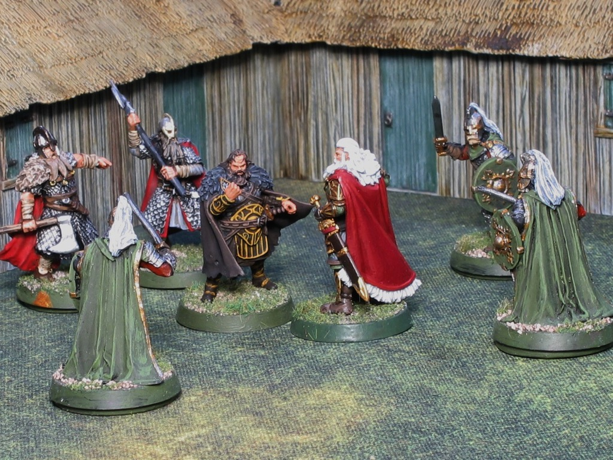

This is a scenario of Games Workshop's Middle Earth Strategy Battle Game, the first in the The War of the Rohirrim book.
In this one-on-one match, Freca and Helm Hammerhand decide to settle their disagreement outside. Whoever defeats his opponent wins the game.
(Click on any image to see an enlargement.)
No need for a separate "The Forces" section here as this scenario uses just two figures. They both set up within 1" of the center of the board.
Good usually starts narrative scenarios with Priority, but Evil begins with Priority here due to a scenario special rule.
Since another scenario rule boosts Freca's Attack rating from 2 to 3 on turns where he Charges, Freca does so.
Helm wins the Duel roll 6-5. Another scenario special rule is that Freca wins tied Duel rolls. So he spends a Might point to tie. Needing 5+ to Wound, his rolls are 4,2,3. He decides to save his Might and so inflicts no Wounds.
| Character | Wounds | Might | Will | Fate |
|---|---|---|---|---|
| Helm Hammerhand | ||||
| Freca | 1 |
Good Priority, 5-4.
Down a Might point compared to Helm, Freca saves his Might for Duel rolls. No Heroic Move.
Despite now only rolling 2 dice for the Duel roll, Freca wins 6-5. Since he wins tied Duel rolls, there's no point in Helm spending Might here. Freca inflicts one Wound.
| Character | Wounds | Might | Will | Fate |
|---|---|---|---|---|
| Helm Hammerhand | 2 | |||
| Freca | 1 |
Evil Priority, 2-2.
Since he's up a Might point, Helm calls a Heroic Move to deny Freca the extra Attack bonus. Freca doesn't counter, saving his Might again for Duel rolls.
Helm wins the Duel roll 5-4. Freca spends a Might point to tie; Helm then spends one to get ahead again, 6-5. Freca then spends his last Might point to guarantee the win.
The subsequent Wound rolls are 6,2. The 6 not only Wounds, but by yet another scenario special rule it will knock Helm out (winning the game for Evil) unless its negated. Helm's first Fate roll is a 2; his second is a 3. Is it worth risking another dieroll? He decides to play it safe and uses another Might point to negate the Wound.
| Character | Wounds | Might | Will | Fate |
|---|---|---|---|---|
| Helm Hammerhand | 2 | 3 3 | 3 3 | |
| Freca | 1 3 3 |
Good Priority, 6-1.
Freca wins the Duel 6-6 but fails to inflict any Wounds.
| Character | Wounds | Might | Will | Fate |
|---|---|---|---|---|
| Helm Hammerhand | 2 | 3 3 | 3 3 | |
| Freca | 1 3 3 |
Evil Priority, 3-1. Helm saves his last Might for Duel or Fate rolls. No Heroic Move.
Freca again wins the Duel rolls, 6-6. Both strikes score Wounds. Helm's Fate roll is a dismal 1, and he is slain.
Evil victory!
| Character | Wounds | Might | Will | Fate |
|---|---|---|---|---|
| Helm Hammerhand | 2 5 5 | 3 3 | 3 3 5 | |
| Freca | 1 3 3 |
Only after I started this writeup did I notice I played incorrectly: the scenario special rule says that Freca wins the first tied Duel roll, not all tied Duel rolls. That would greatly have changed this playthrough. Helm has a higher Fight value, and Freca does not have Heroic Strike (which lets a figure increase its FV), so Helm would have won those 6-6 ties. And since Helm Wounds Freca on 4+, Freca likely would have died on turn 3 or 4. That would have keep things closer to the movie. Mea culpa.
So let's try this again. Keep scrolling....
Freca begins with Priority, and Charges to get his Attack bonus.
He wins the Duel roll 5-3. Helm would have to burn all three of his Might to win, and then Freca could then use a single Might point to win the tie. So Helm saves his Might and hopes for the best. Freca score one Wound on him.
| Character | Wounds | Might | Will | Fate |
|---|---|---|---|---|
| Helm Hammerhand | 1 | |||
| Freca |
Good wins Priority, 3-2. Freca saves his Might, so no Heroic Move.
The Duel roll is tied, 5-5. Since this is the first tie, Freca wins. Helm can't prevent this, as if he boosts his roll, so will Freca. And anyway, he figures he'll be okay since Freca has only 2 Attacks this turn. So he lets the raw result stand.
Freca scores another Wound on Helm.
| Character | Wounds | Might | Will | Fate |
|---|---|---|---|---|
| Helm Hammerhand | 1 2 | |||
| Freca |
Good Priority 4-3.
No longer having the benefit of winning tied Duel rolls, Freca calls a Heroic Move so as to get his Attack bonus.
Since Helm now has an advantage due to his higher Fight Value, he saves his Might for adjusting Duel and/or Strike rolls, so doesn't counter the Heroic Move. Freca Charges.
But Helm doesn't need the help, as he wins the Duel roll 6-4. Freca's Might can't help him here. He takes 2 Wounds, one of which is negated by his sole Fate point.
| Character | Wounds | Might | Will | Fate |
|---|---|---|---|---|
| Helm Hammerhand | 1 2 | |||
| Freca | 3 | 3 | 3 |
Good Priority again, 6-3.
Freca, using the same logic as last turn, spends another Might point for a Heroic Move. But, smelling blood, Helm counters. Unfortunately for him, Evil wins the roll-off.
But Lady Luck is fickle, and Helm wins the Duel roll 5-4. With only one Might point, Freca can't beat that. Helm inflicts another Wound and slays Freca.
| Character | Wounds | Might | Will | Fate |
|---|---|---|---|---|
| Helm Hammerhand | 1 2 | 4 | ||
| Freca | 3 | 3 4 | 3 |
I don't quite get why it's Freca who gets the rule where he knocks out his opponent on a natural 6 Wound roll but Helm doesn't. You know: Helm, the guy who gets the "Hammerhand" nickname due to the situation shown in this scenario? Not that it mattered in either of these play-throughs.
With only two figures, there's not much room for tactics here. I suppose Helm could run away on turns when Freca gets Priority, thus denying him the extra Attack roll. But that would be both out of character and limited by the small 1'x1' board size.
This scenario does what it needs to do based on the movie scene it is recreating. But this is really just a die rolling contest, with decision making limited as to how to spend your Might. It's not bad, but I can't give it a very high rating.
My rating: ★★☆☆☆
{kind=link}
{kind=link}
{kind=link}
{kind=link}
{kind=link}
{kind=link}
{kind=link}
{kind=link}
{kind=link}
{kind=link}